来源：https://szzs4fdjd8.feishu.cn/docx/DNGrdODFBowfk2xwkNCc5GGSnRd
大家好我是小千，老圈友了，简单介绍一下吧：初一辍学,自学编程,未成年时App盈利百万！
比较喜欢研究小而暴利的产品，经历了移动互联网，淘客，私域流量。最近刚失业，目前在调研海外软件尝试入局，难得有空写一篇文章与大家分享卖空气的基本思维。.
多年前写过一篇精华帖：https://t.zsxq.com/097zNVqZG
放心阅读，这不是一篇代码文章，文中只会略微涉及编程知识
很多人学编程，学了几天都不知道在学啥、不知道有啥用
甚至学了好久，才发现学的是“后台开发”
“后台开发”离用户就更远了，但这是打工标配技术
好多程序员，只会写代码，但不知道做什么
无法站在真正的用户角度上去开发产品，只会站在自己的角度上,分享些使用门槛很高的代码
这是一个软件 Vs 这是一个代码
它的差距是非常大的，在用户眼里：“代码是没有用的”，软件是有用的！
很多人系统化学了一下网页设计，会发现做一个用户端界面真的挺复杂！
是你太正规了
做用户端的产品，根本没有必要做得多复杂！
特别是个人开发者，根本没有必要用代码设计界面
直接用类似PPT的拖拽就行，只要用户能会使用，看着是那么回事就行了，计较专业化有什么意义？
多年经验总结一个观点：软件的本质就是软文。
软件开发出来，怎么推广？
还是通过写文章，发广告，介绍你这个软件，软件的最终的展现方式还是软文
所以直接拿软文，最终形式。
反推开发流程，甚至不开发软件，而是寻找类似的软件给客户使用。
想一些根本不现实，或多数人下载不到的软件，但他们觉得应该有这种软件，只需要想到名字即可
写软文的核心是用户看到你这篇文章，内心在想“这次找对了！”，就行了，不管他真找对了还是假找对了。
举例：
就拿看病举例子，医生会问你：“有没有这个症状？有没有那个症状？”
结果你发现：“都是我现在的症状”，所以你认为这个医生懂你的病，这次找对了！
但可能医生仅仅知道你的问题而已，并不代表可以治好!
所以，这就是一种内容策略，用复述问题建立信任基础！
开发软件不是一个简单的事，但是你用对了工具，它就是一个简单的事
使用《中文编程工具》，不会英语也能快速入门，放一个图片：
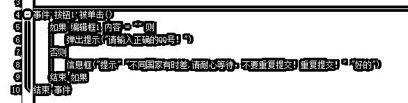
孙悟空没有兵器的时候，每天任务就是找一件趁手的兵器。对于开发软件也一样，找一个趁手的工具，简单又好用的工具是非常重要的
降低沟通成本
当一个想法做出来比表达出来，更快的话，那就没必要说了。
把需求完整的讲出来，又让他理解，本身就是一件不容易的事。沟通成本有时候比开发成本都高，还赶不上有一个趁手的工具，自己先捏一个模型给他看！
或者直接做个模型，上架开卖，卖空气，卖预售。卖不出去就没必要继续做了！
《精益创业》这本书里讲过，科技公司准备接下来做啥产品功能之前，先不要直接开干，而是发个这个产品功能的炫酷视频，看看受众反应如何再决定做不做。
网页、小程序使用起来，对于用户而言非常方便
App的使用肯定是不方便的，又需要下载，又需要安装
但是正因为App使用不方便，却可以当成优势利用一下
举例：网页、小程序。
它一定要好用，如果不好用
因为用户可以直接打开它，很快就知道是否好用！
如果没有强烈的需求，用户根本不可能去下载安装App
App大多数展示只是看客，下载率极低！
但这时用户看到了App截图和使用方法
用户就会知道，有这么一个App，没有需求的用户不可能去下载。
所以用户觉得：该App“真的具有该功能！”
AppSeo(搜索排名)
App对排名Seo也会有一定的影响
例如：我写一篇文章。
用户在你这个文章的页面停留的时间越长，搜索引擎就会觉得你这个文章更专业，没毛病吧？
要不怎么说下载站的排名还不错呢，因为用户到了这个界面之后，要下载，用户等待这个下载的时间
Seo还有一个更关键的，就是用户访问了你的网页之后，直接就退出了，不访问了，不访问其他的网页，那也就说明你这个网页更专业，也没毛病吧？
下载完App以后，他肯定就关闭网页了，因为他去打开APP了，如果是个网页，他发现不好用，就返回搜索结果，换个网页！
大家总说：“好的产品”就是解决一个需求。
但还有一个观点没说，那就是：“不解决需求”，“也不是好的产品”，并不会影响赚钱的速度！
“评论区”你们可以自己去看，我就不多评论：
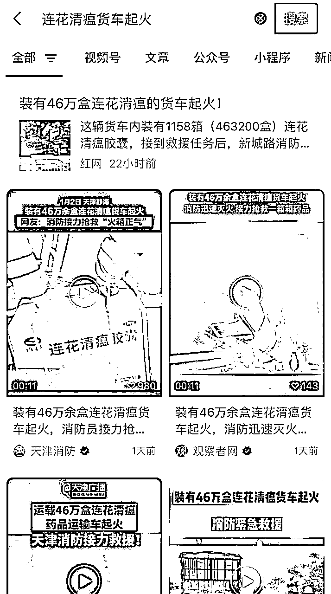
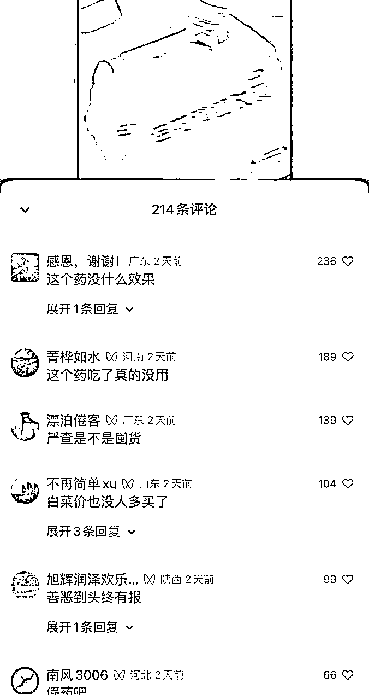
医学上有一种安慰剂效应，说白了就是诈骗效应。
一个糖豆卖的特别贵，就说这是救命药，你吃了也真管用，患者的康复率30%以上！
连花之所以大卖，就是名字取得好，事实证明起个好名字，真的可以改变固有事实！
早些年做个礼包软件，根本领不到礼包，但应用商店评论区："我领到了","是真的我也领到了"
我习以为常，观察人类迷惑的行为：
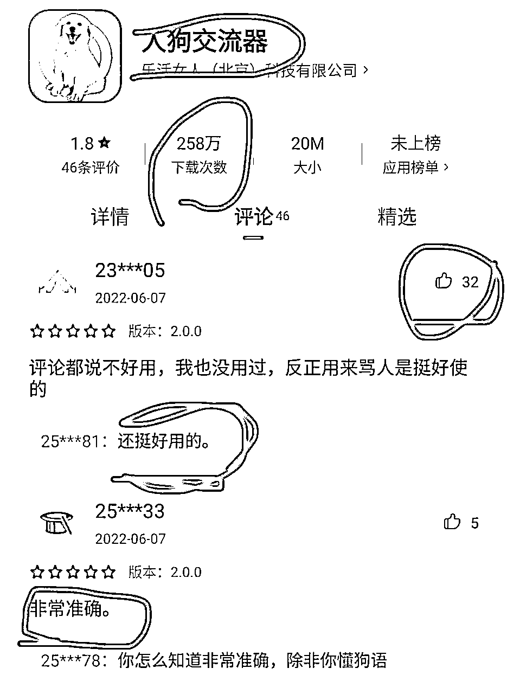
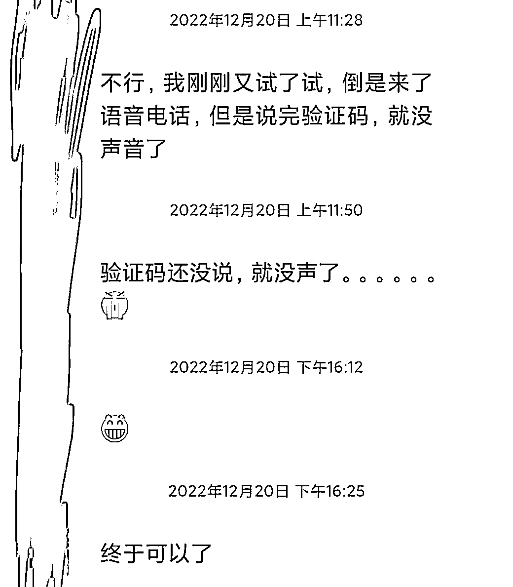
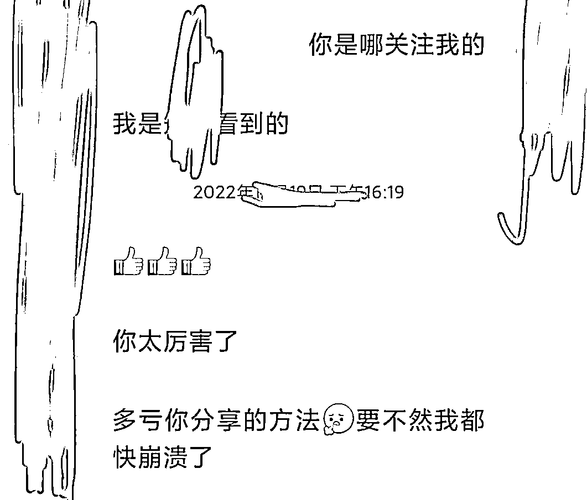
社交媒体的营销派，一点编程都不懂
他们经常写这样的文章，攻略解决xxx软件问题，举例：“微信搜一搜，搜不出来怎么解决？”
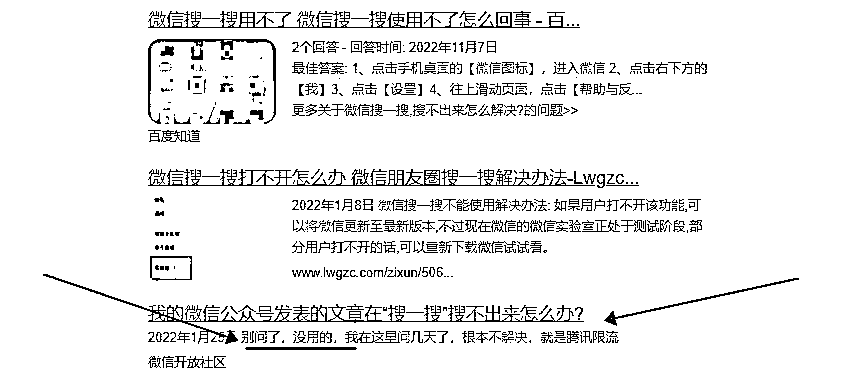
文章写一堆乱七八糟，瞎编的攻略。
世上本没有攻略，瞎编一些就有了！
该类文章特征：写的字长，让你停留时间长，让你照着各种步骤去做，反正你最终也解决不了！
但是你在该文停留时间长，因为你需要照着做，搜索引擎就觉得该文：“长篇大论且专业，排名更靠前了”
比如第一个搜一搜案例：随便找个微信官方的邮件
写文章说给这个邮箱发邮件，发模板，瞎编个特别长的模板，告诉用户照着弄就解封了，这是不用任何App的营销
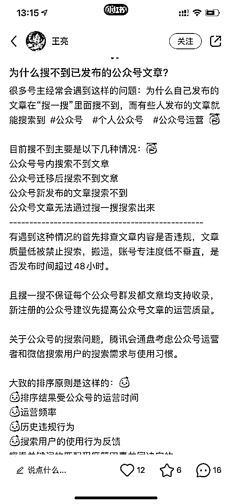
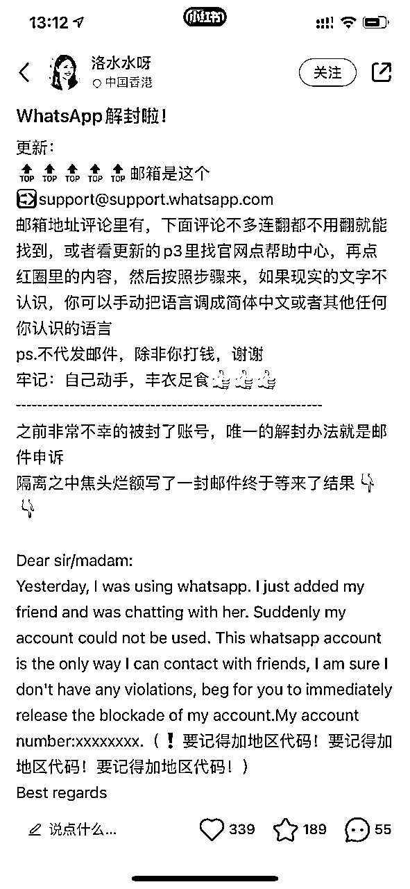
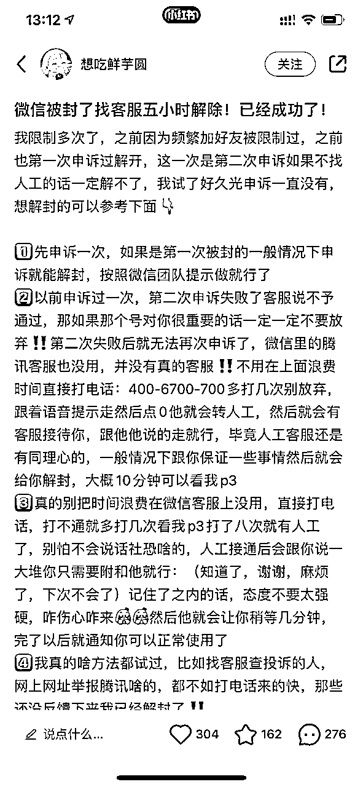
市面上的营销文章大多是：编一些根本不存在的攻略
比如：抖音怎么去引流
教你怎么注册账号，账号多少天，模拟什么真人行为，生成一堆，看似有用，实则长篇大论且无用！
神奇的是，因为超级长的文字，用户也不会去看，用户觉得该文专业，各个互联网群里都有人在转发。
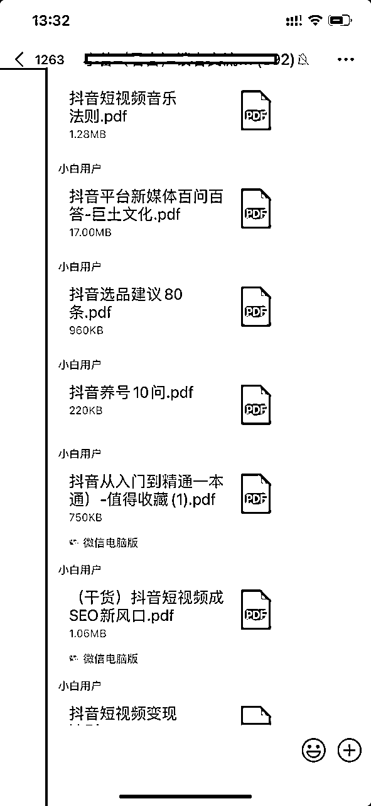
软件营销派
但是呢，如果这种方向的文章上产生了一个软件派，就可以直接碾压他们了
因为软件看起来更逼真了.....
虽然仍然不解决任何问题！
用户会觉得：软件问题就是要用软件解决，用魔法打败魔法，而不是靠攻略解决。
弄一个APP告诉你，你下载这个APP，填上名字，就可以申请解封！
对于这两个版本而言，用户肯定会觉得后一个版本更专业
虽然这两个版本都无法解决你的问题。
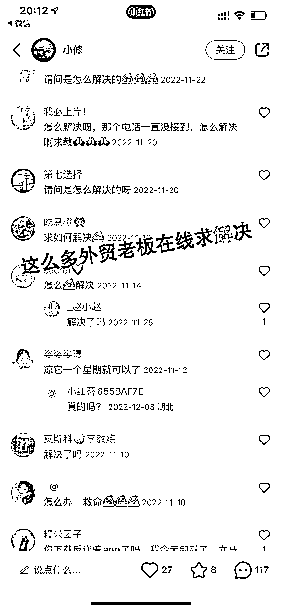
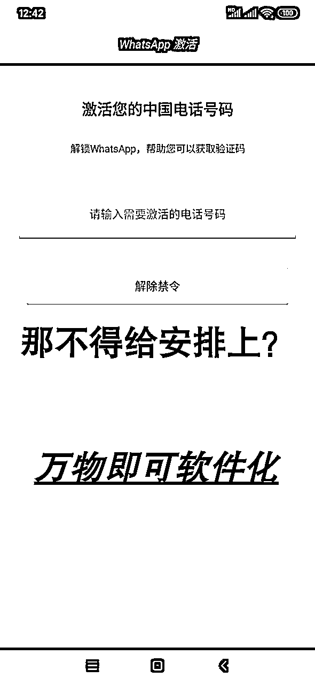
那么，广告呢？
软件营销策略可以设置多种多样！广告不留在表面即可！
骚操作都是动脑子想出来的，我不仅有广告，我还强制你分享给别人后才能使用，这可比软文营销狠：
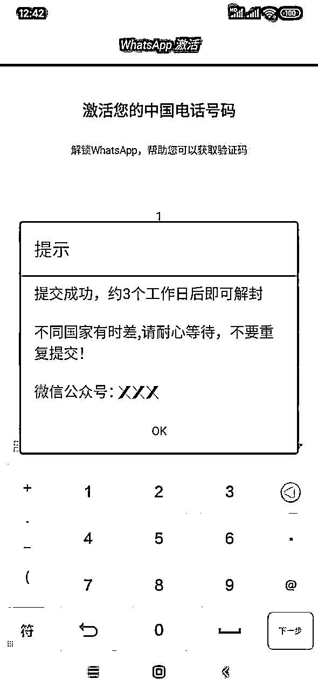
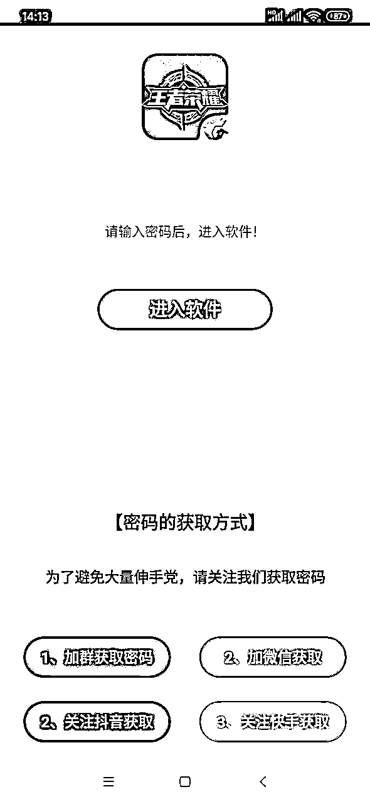
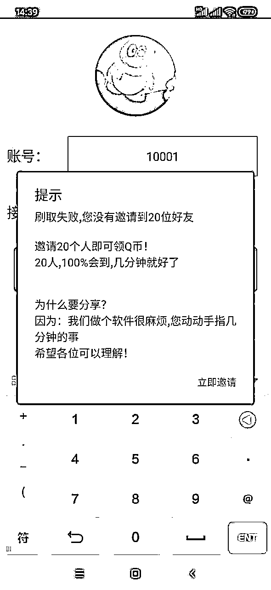
上面我们讲到：没有强烈需求的用户不会下载App
但用户看到这个App后，他会有个印象
当身边有人遇到这种问题，他就可以把这个App转发给别人，但他自己没有体验过这个App
早期在“社交媒体”推广App比较容易的原因之一
“社交媒体”审核员每天看到很多人分享软件，不可能去下载体验，但“社交媒体”审核员会给用户推荐！
如果你的软件表面上都是广告，从截图上就看到各种广告，关注公众号之类的，那就别指望其他人帮你推广了。
所以软文需要有一个干净的截图，只凭软件的截图，没需求用户不会去下载的，调动用户分享精神，也是一种在社交媒体推广软件，过审的技巧！
那么文章怎么过审？？？
文超长，字超多，审核员懒得看，就行了！
可使用：合集、大全、汇总，之类模板，增加文章字数！
之前提交一个证明材料，只提交了2页直接给我拒绝了，后面我乱七八糟提交了15页秒过。
知乎只要是长文，点赞收藏就多。
看到200字有联系方式或者公众号，先加了在说，然后收藏点赞（反正看不完，以后也不会看）
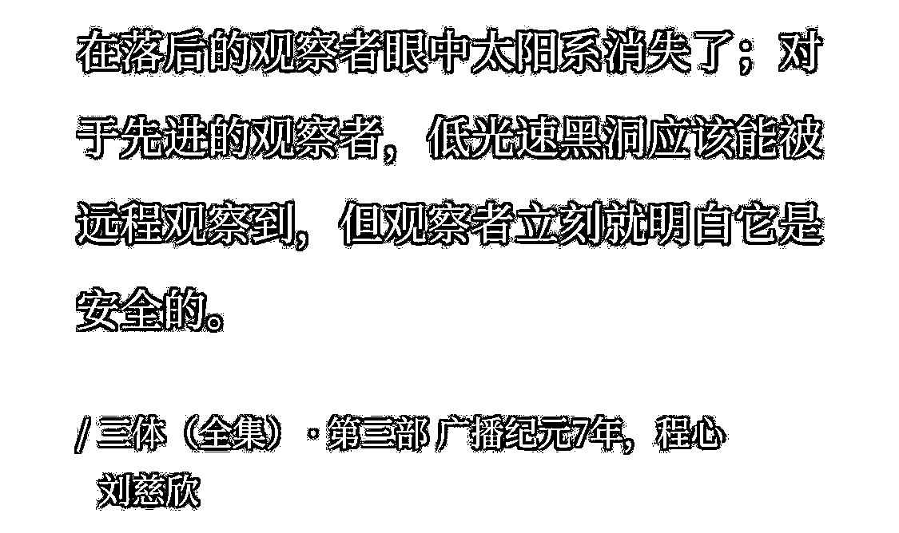
之前做淘客，刚入门就遇到各种api接口问题无法解决，不知道如何申请，或者说申请了也用不了！
我百度查，怎么查都找不到对应的文章，那干脆我写一篇吧？
我将这个问题用：已经解决的口吻写出来
软文中附加微信号，之后每天都有淘客大佬加我，土豪老板刚通过好用就直接连发几个888转账！
一堆淘客大佬加我问怎么解决？
我特么怎么知道咋解决，我只是知道这个问题。
加我的人足够多了，过了些天，我又反问加我的人“前几天有点忙没来得及回，你们解决了吗？”开始套话，怎么解决的？
总有解决的，也总有没解决的。
把解决的套出来，卖给精准的，没解决的客户，直接盈利几十万！
不懂归不懂，一个外行，也能给你解决问题，外行领导内行也不是不可能，这个套路就叫“做局”，详细对应文章：《讲故事、做局、编瞎话...》《问题本身就是资源，重磅干货》
现在开始做外贸Google也一样，先做着，遇到问题直接用资深大佬的语气写出来，自然而然解决了！
案例、二
羊了个羊刚有点火，立刻就有人P一张分数999999截图
去社交软件用已经开挂的口吻发文，开始吸粉
差不多5天后《羊了个羊》大火🔥
这时他就可以，套话找真正能刷分软件了，直接把粉丝变现！
程序员的思维总是先有东西再推广，不要等什么东西已经有了再去卖！假装已经有了足够！卖空气！
套话为什么能成？
套话之所以能成，主要是因为对方要彰显优越感，“没有你这个事我也能干成”，对方要彰显他自己的优越感
前提是，对方已经觉得“你已解决这个问题了”，所以他要展示这种优越感，也是对心理的一种利用
个人开发者，主要精力不应该是开发
应该站在用户角度上去调研做什么，之后用一个非常简单的方式把这个东西捏出来！
对于个人开发者来说，就是多想一些不切实际的东西，少想一些复杂的东西。
做些小而简单的软件，站在用户角度上根据需求打造产品
真正的需求，就是用户有求于你
需求是抓住用户遇到问题,用户寻找解决办法产生的行为。
围绕用户可能产生的行为场景，在行为中部署产品！
发现需求的方式也很简单，去应用商店找一些App名字，输入百度、微信、小红书，Google搜索框：
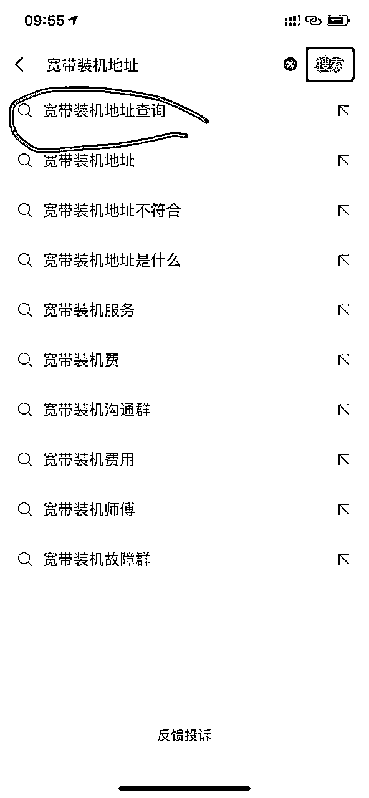
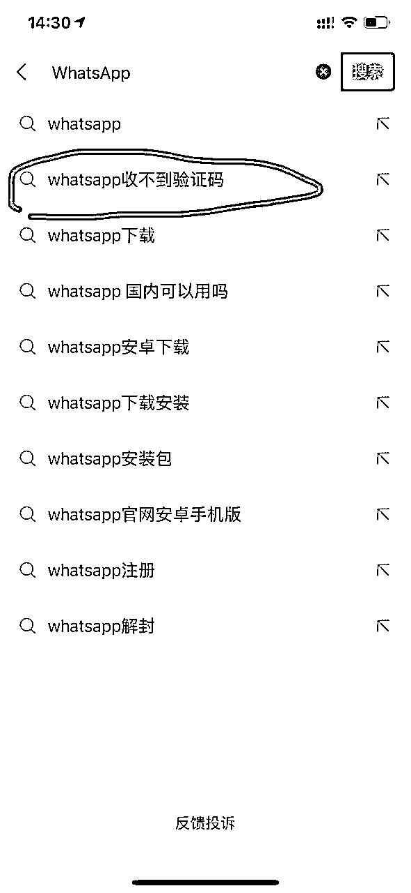
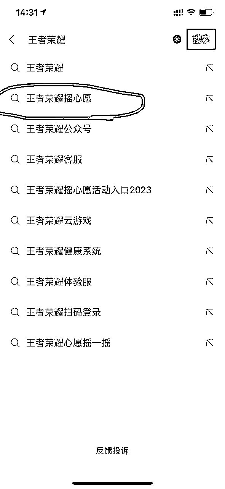
非规范化生产
个人开发者需要的是“非规范化生产”俗称野路子，我就在考虑做个“非规范化编程课”，不知道有多少人感兴趣
非规范化生产的核心是：“降低成本”“提升效率”
有人说：“免费的是最贵的”其理论依据：折腾免费的东西，浪费时间易踩坑，你的时间更值钱。但对于多数人来说时间是不值钱的！
就怕个人开发者“没有正统的命，得了正统的病！”
个人开发者研发一个软件的时间不应超过1周，超过1周的软件产品不适合个人开发者！
软件全球化
目前国内的互联网环境没那么好，软件全球化是大势所趋，甚至可能是唯一的出路！
但文化上的水土不服是常态，经过一段时间的调研，我甚至觉得海外对软件非常友好~
1、网站不需要备案
2、Google投放广告不需要证件，充钱就行
3、软件不需要“软件著作权证书”
4、不需要应用商店审核
无证件的产品也可以上市场，正适合非规范化生产
谁说开发软件一定要有：服务器、登录注册页？再配个UI、产品经理？
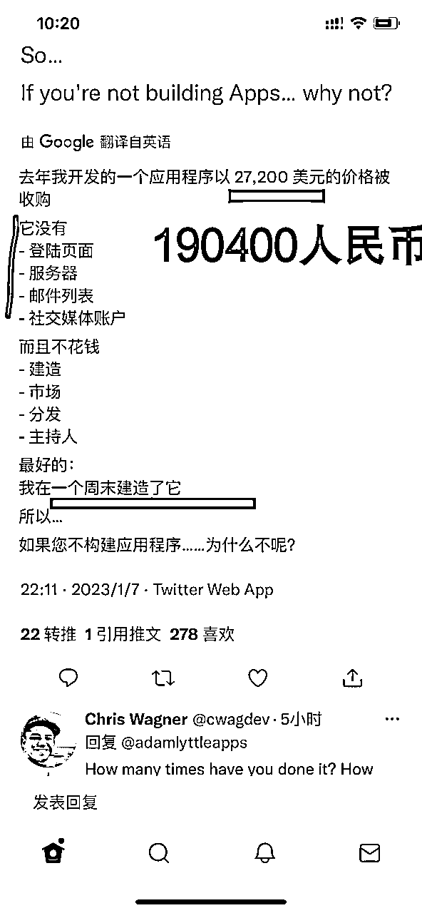
1、若不是为了找工作而学编程，应考虑：“非规范化编程工具”，靠近用户编程
2、找到趁手的工具，或使用《中文编程》快速入门。研发出模型上架开卖，卖预售，卖空气。
3、软件的最终呈现方式还是软文，直接发布软文，反推研发软件流程，复述用户问题可以建立基础信任
4、App繁琐的使用流程，没需求用户不会下载，精准过滤了需求。用易拉罐嗑瓜子机，演示App爆火的流程，换汤不换药。
5、有效的噱头,无效的产品，不解决需求，也不是好产品，并不会影响赚钱。起个好名字，可以改变固有事实！
6、攻略营销派：世上本没有攻略，瞎编一些就有了！无效的攻略看起来特征：“长篇大论且专业”，超长文的优势：用户看了几百字觉得该文专业就会收藏转发，后半部分不会看！
7、软件营销派：核心是，看起来更逼真、更专业。广告隐藏的更深，更容易用户裂变
8、过审的艺术，套用《三体》观察者看了截图一眼，就知道“他是安全的”，核心就是让自己变得至少看起来是无害的。
9、居高临下的套话，遇到问题用资深大佬已经解决这个问题的语气写出来。让同样遇到问题的人加你，即可解决问题。套话之所以能成是调动对方优越感
10、个人独立开发者，研发周期应不超过一周，通过下拉词寻找需求，使用“非规范化生产”，尽可能降低成本，提升效率
欢迎交流，个人微信：5833487